Yksi kone, kaksi miestä, yksi syna – täyttyy hiestä!
 Konemestarit
Kone-uutiset
Konemestarit-mediapankki
Konemestarien mediapankista löytyy kuvat, logot ja kansitaiteet.
Lataa ja nauti!

Debyyttialbumi Oy julkaistiin 22.8.2025!
LÄHDE TEKNO-TYÖELEMÄ-TARINAN MAAILMAAN JA KUUNTELE ALBUMI NYT!
Spotify |
Apple Music |
YouTube |
Tidal/Deezer/Amazon/Muut
Konemestarien debyyttialbumi "Konemestarit Oy" julkaistiin perjantaina 22.8.2025. Albumi sisältää 10 uutta teknokappaletta, joista kaksi on julkaistu aiemmin sinkkuina (Konemestarit ja Back in the Osakeyhtiö).
Yhteydenotot? Jaakko Saarenketo - jaakko@favor.org
Levyn tiedot:
Konemestarit - Oy
Albumin julkaisupäivä 22.8.2025
Raidat:
1. TaaS (Tekno as a Service)
2. Konemestarit
3. Construction
4. Girl (Koko Hela World)
5. Bahama
6. Back in the Osakeyhtiö
7. Lounastauko
8. Konemestarit Reprise Feat. Derek Sherinian
9. Scooter (One Night in Alavus)
10. Rekrybonus
Konemestarit: Jaakko Saarenketo, Pekka Pyyny
Vierailijat: Derek Sherinian, keyboards - raita 8
Snow Northstar - shamanic drum - raita 5
Visa, Vili ja muut Alavuden apinat - raita 9
Henna, yläsävelkuorsaus - raita 10
Sävel & sanat: Jaakko Saarenketo & Pekka Pyyny
Levyllä kuullaan: Sonicware Liven Lofi-12 (yksi kone),
Jaska ja Tökö (kaksi miestä), Roland GAIA (yksi syna)
Apukoneina: Yamaha DX-7, Roland XV-5050, Yamaha CS-80 (plugin)
Sävelletty kesällä 2024 pl. raita 10 syksyllä 2024.
Äänitetty joulukuussa 2024 Rovaniemellä
Tuotanto, lisä-äänitykset ja miksaus tammikuu-kesäkuu 2025.
Julkaisija: Favor Company Inc.
Tuotanto, äänitys ja miksaus: Jaakko Saarenketo
Masterointi: Ian “Cally” Hollyman
Julkaisupalvelu: iMusician
Konemestarit logo: Imran Y
Kansitaiteet: Jaakko Saarenketo
Kiitokset: Henna, Marika, kaikki lapset ja lemmikit
Ville, Visa, Vili, Taija, Sanna, Riia, Birgita, Masa,
Petri Uusitalo - Uutisvuoksi, Ville Muikkula - Radio Kaleva,
Villen paardien koko yleisö, Espoon Konemestarit Fan Club,
Oulun ja Imatran hiihtoladut, Rovaniemen Palloseura
Kaikki ystävät, sukulaiset ja varsinkin fanit!
Mitä jos pistäisit "Konemestarit seurantaan"?
Ja muista kuunnella albumi:
Spotify |
Apple Music |
YouTube |
Tidal/Deezer/Amazon/Muut
Back in the Osakeyhtiö - Uusi sinkku julkaistu 20.6.2025!
Kuuntele!
Spotify
YouTube
Apple Music
Tidal/Deezer/Amazon/Muut
Beastie Boys vai Pulttibois? Back in the Office julki 20.6.2025
Konemestarien toinen sinkku on alle kolmen minuutin räp-rapsodia työelämän noususta, tuhosta ja noususta. Nauhoitettu Rovaniemellä ja Oulussa, sävelletty Hyvinkään reenikämpällä, miksattu Imatralla, sanoitettu Helsingin Villi Wäinön terassilla sekä Oulun Baarin lounastauolla ja masteroitu Iso-Britanniassa. Säv/san: Jaakko Saarenketo & Pekka Pyyny. Masterointi: Ian ’Cally’ Hollyman.
Back in the Osakeyhtiö löytyy nyt kaikista suoratoistopalveluista.
21.3.2025 - Konemestarien debyytti sinkku "Konemestarit"
Perjantaina 21.3.2025 julkaistiin albumin ensimmäinen sinkku – Konemestarit. Kolmessa minuutissa selviää mistä on kyse: Retromeininkiä, energistä biittiä ja törkeitä korvamatoja.
"Ei sillä oo välii kunhan tanssilattia täyttyy!"
Kuuntele sinkku ja pistä Konemestarit seurantaan:
21.3.2025 - Konemestarit
Yksi kone, kaksi miestä, yksi syna – täyttyy hiestä! Konemestarit on uusi valtakunnallinen teknoyhtiö jonka perustajat ovat Jaska ja Tökö. Rovaniemi, Hyvinkää, Oulu ja Imatra – laadukkaita teknotuotteita luodaan ympäri Suomea.
Ensimmäiset teknoprototyyppituotteet luotiin kesällä 2024. Saimme yksityiskeikkojen jälkeen niin hyvää palautetta, että oli pakko suunnitella jatkoa. Jo joulukuussa loimme perustat keväällä julkaistavalle albumille.
Konemestarit seurantaan
Savumerkkejä Kuusamoon…
@konemestarit InstagramissaKonemestarit Facebookissa
Yhteydenotot:
Jaakko Saarenketo -
jaakko@favor.org
&
Pekka Pyyny -
pekka.pyyny@gmail.com